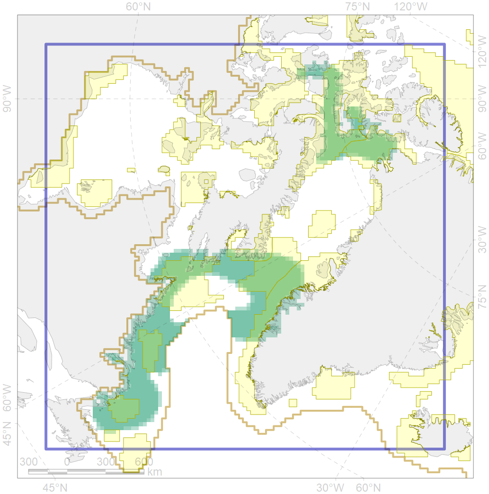
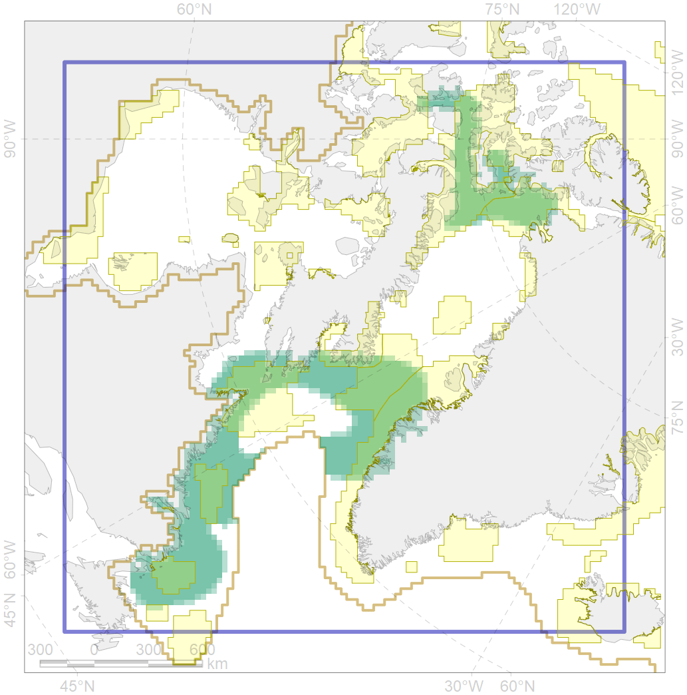

6041
 

| CF code | 6041 |
| CF name | Ivory gull (Pagophila eburnea) postbreeding grounds in the Canadian Arctic |
| Time Period | 1990-2013 |
| Source(s) | Gilg et al 2010, Spenser et al 2014 |
| Seasonality | September-October |
| Depth Horizon | >0 m |
| Methodology | Field Data |
| Use Restrictions | Open source |
| Author Name | Gavrilo, Tertitski |
| Notes | |
| Scenario’s Target | 0.216 |
| Target Achievement | 0.555 (Scenario: 257.1%) |
| PAC | Share of the Total Amount within the PAC | Share of the Target Achievement for the ArcNet | PAC’s Contribution to the Target Achievement |
|---|---|---|---|
| 44 | 8.8%10.2% | 39.6%46.0% | 15.4%17.9% |
| 45 | 8.9%9.9% | 39.4%43.7% | 15.3%17.0% |
| 46 | 1.5%2.1% | 6.3%8.8% | 2.4%3.4% |
| 51 | 6.7%7.8% | 30.5%35.3% | 11.9%13.7% |
| 52 | 11.1%11.8% | 49.3%52.5% | 19.2%20.4% |
| 65 | 0.3%0.3% | 1.4%1.4% | 0.5%0.5% |
| 76 | 7.8%8.2% | 32.5%33.4% | 12.6%13.0% |
| 77 | 4.9% | 20.7% | 8.0% |
| 78 | 0.0%0.1% | 0.1%0.3% | 0.0%0.1% |
| 79 | 4.6%4.9% | 17.5%17.5% | 6.8%6.8% |
| 80 | 0.0%0.0% | 0.1%0.1% | 0.0%0.0% |
| inner | 54.7%60.3% | 237.3%259.6% | 92.3%101.0% |
| outer | 45.3%49.4% | 19.8%35.2% | 7.7%13.7% |
| † supplement values are for area consistence whereas principal values are for Accenter compatible gridded stats |